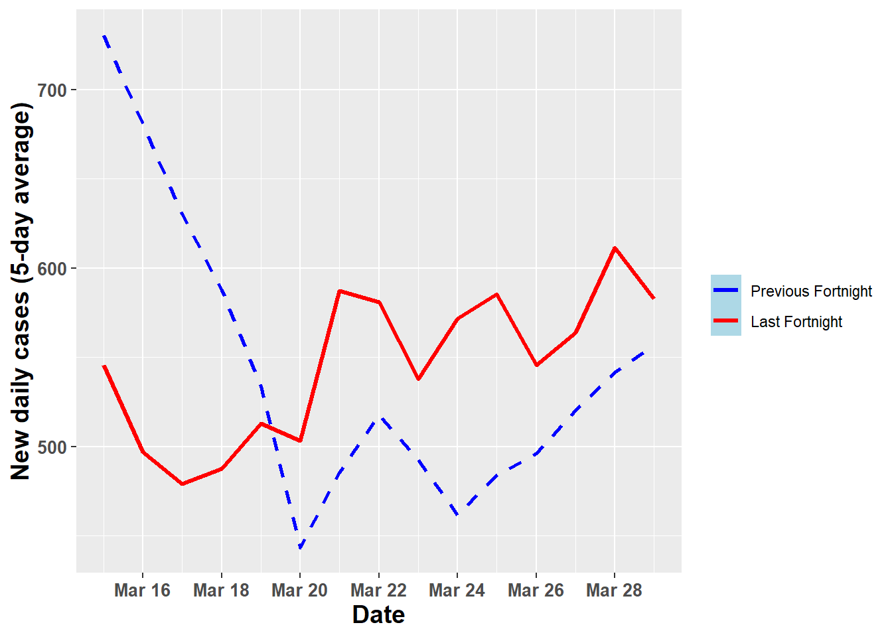

The 5 day running average allows for a closer look at the current rate of infection and progress in the country. The red line shows how the 5 day running average of new cases per day has changed over the 14 days leading up to 2021-03-29. We have overlaid the trend over the two weeks previous to this, shown as the dashed blue line.
